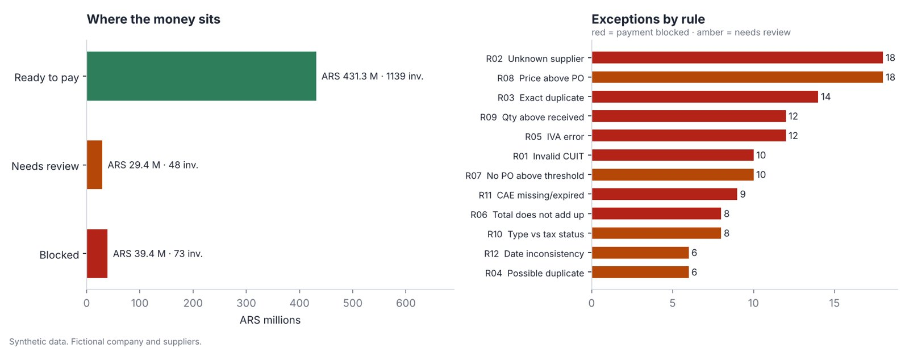

Control de cuentas a pagar
Accounts payable control
Doce reglas revisan cada factura de proveedor antes de la corrida de pagos: CUIT, duplicados, IVA, factura contra orden de compra y recepción, tipo de comprobante y CAE. Cada factura queda lista para pagar, a revisar o bloqueada, con el motivo.
Twelve rules check every supplier invoice before the payment run: CUIT, duplicates, VAT, invoice against purchase order and goods receipt, invoice type and CAE. Each invoice ends up ready to pay, needs review or blocked, with the reason.
Detecta las 121 anomalías cargadas a propósito y no marca ninguna factura limpia.
Catches all 121 planted issues and flags none of the clean invoices.
